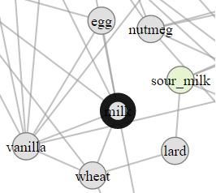
 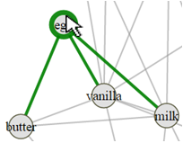
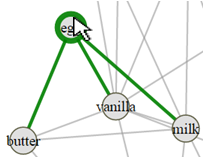
This is a research study. We want to understand how to best show network data (items with connections between them). We will show you a visualization of cooking ingredients (ex: salt, meat) with links between ingredients that are often used in recipes together.

You can interact with the visualization. Zoom by using the mouse wheel. Pan by pressing the left mouse button down and
dragging (as in Google maps).
Select and deselect ingredients as answers by double-clicking on them.
Select and deselect ingredients as highlights by clicking on them once. Move ingredients by
dragging them (sometimes this can be useful to tell where its links go). Mouse-over ingredients and links to highlight them.
Here is an example of a selected answer, a highlighted node, a hovered node and a hovered edge respectively.
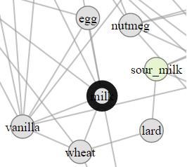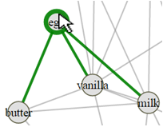
We will ask you a few questions about this data. Please answer the questions as fast and accurate as possible by viewing and interacting with the visualization. There will be a countdown for each question; once it expires, we will hide the visualization. We will give you a turk-code to use for payment once you finish the study.
We will pay a $2 bonus to the user with the best overall accuracy/time.
The study includes two questions we consider to be easy enough that everyone can answer correctly. You need to answer both
correctly to receive payment.
| Questions | Answers |
| 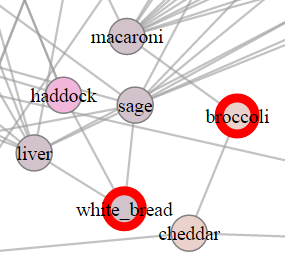 |  |
| 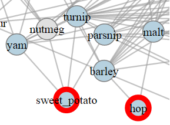 | 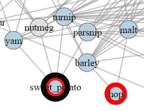 |
| Questions | Answers |
 |  |
| 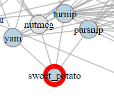 |  |
| Questions | Answers |
| 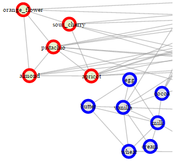 | 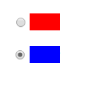 |
| 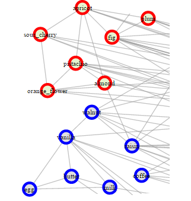 |  |